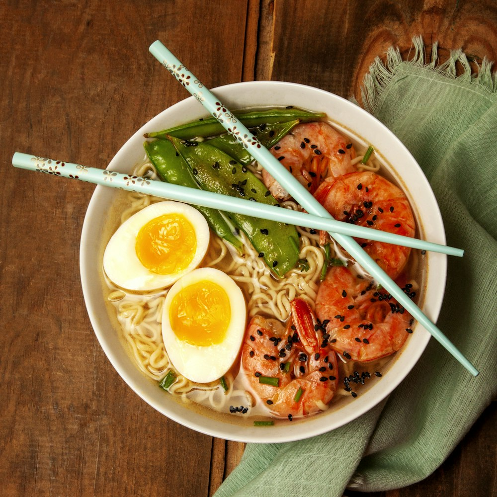

Sizzling Teppan Hibachi & Craft Sushi
Fast-casual Japanese excellence in Uptown Charlotte. Flame-seared hibachi steak & chicken, multi-compartment executive bento boxes, and fresh specialty sushi rolls.
Fast, Fresh, High-Heat Japanese Flavors
Located on the ground floor of the Ally Center across from Romare Bearden Park, Hasaki delivers speed without cutting corners on authentic Japanese ingredients.
Signature Hibachi & Fresh Rolls
Prepared to order with grade-A meats, fresh sushi-grade seafood, and house-blended sauces.
 Teppan Sizzle
Teppan Sizzle
Hibachi Steak & Chicken
$16.95Tender NY strip steak and chicken breast seared with garlic butter, soy, and sesame seeds, served over teppan fried rice and hibachi zucchini and onions.
Customize Hibachi Chef Roll
Chef Roll
The Volcano Roll
$14.50California roll base topped with warm baked spicy crab salad, scallops, crunchy tempura flakes, scallions, eel sauce, and spicy sriracha glaze.
View Sushi Rolls
Complete LunchExecutive Bento Box
$15.50Choice of Teriyaki Chicken, Salmon, or Steak with 4-piece California roll, pan-seared pork gyoza, ginger salad, fried rice, and sweet Yum Yum sauce.
Build Bento